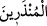
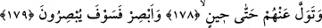
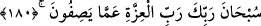
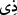
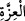
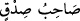

ordudur. Burada “__WORD__ kelimesindeki “__WORD__” takısı cins mânâsındadır. Zira medih ve
zem fiilleri umumilik, kapalılık ve detay gerektirir. Buna göre buradaki “__WORD__” malum
birilerini ifade etmez. “Sabah” kelimesi azabın inme vakti için geceleyen ordunun
sabahından mecaz olarak getirilmiştir. Ordular daha çok sabah baskını yaptıkları için
baskın akşam da yapılsa onlar baskına sabah demişlerdir. Kâşifî der ki: Rivâyete göre
Araplar arasında katil, yağmalama ve esir alma çok olurdu. Bir kabileye kasdeden asker
akşamdan sehere kadar yol giderdi. Uykunun ağır olduğu seher vaktinde o kabilenin
etrafını sararlar ve onları katledip mallarını yağmalar ve bir kısmını da esir alırlardı. O
kavmi tamamen yok ederlerdi. Bu sebepledir ki yağma çoğunlukla sabah vakti
olduğundan ona “sabah” adını verdiler. Sabah vaktinin dışında olsa da yine de ona
“sabah” derlerdi.
178,179. Sen bir zamana kadar onlara aldırma. Onların halini gör, onlar da
göreceklerdir.
Bu söz bir tesellinin peşi sıra Hz. Peygamber (s.a.)’e yapılan bir başka tesellidir. Bir
te’kidin ardından böyle bir zamanın yaşanacağını te’kid etmektir. Aynı zamanda her iki
görme fiili de mef’ulsüzdür. Bu durum şunu bildirmektedir: Hz. Peygamber (s.a.)’in
göreceği güzellik ve mutluluklar ile onların görecekleri zarar ve musibetlerin sözlü
olarak ifade ve beyan edilmesi mümkün değildir.
180. Senin izzet sahibi Rabbin, onların isnat etmekte oldukları vasıflardan
yücedir, münezzehtir.
Burada hitap Hz. Peygamber (s.a.)’edir. Yani Ey Muhammed! seni terbiye ve tekmil
eden ve mutlak mânâda izzet ve galibiyetin mâliki olan zâtı, onun zât-ı kibriyâsına
yakışmayan müşriklerin O’nu vasfettikleri -evlat, eş ve ortaklardan ve azabı hemen
istemelerinin de delâlet ettiği gibi- onların aleyhine sana yardım etmemesi gibi
hallerden tenzih et.
Bahru’l-ulûm’da der ki: Allah Teâlâ burada Rab kelimesini izzet kelimesine muzâf
kılmıştır; zira izzet ve şeref yalnız Allah’a aittir. Sanki “ __WORD__ __WORD__” yani izzet sahibi
denilmiş oldu. Bu söz senin “__WORD__ yani sadakat sahibi sözün gibidir. Sıdk ona
özel olduğu için böyle denilir. İzzet, zâtî olduğu için bu mânâda yalnız Allah’a
mahsustur.